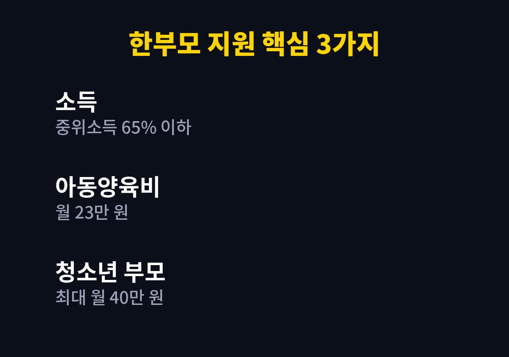

한부모가족 아동양육비는 소득 기준을 충족하면 아이 한 명당 매달 받을 수 있는 지원이다. 혼자 아이를 키우며 양육비 부담이 큰 부모에게 필요한 기준과 순서를 담았다.
2026년 11월 기준으로 찾아본 내용을 내 말로 정리했다.
나도 두 아이를 키우는 입장이라 가족과 이야기하다 혼자 아이를 키우는 집은 얼마나 힘들까 싶어 찾아보게 되었다.
한부모가족 지원은 아이를 혼자 키우는 가정에 아동양육비 등을 지원하는 제도로 정리되어 있었다.
이혼이나 사별 이후에는 당장 생활을 챙기느라 지원 제도를 알아볼 여유가 없는 경우가 많다.
게다가 소득 기준이 있다 보니 우리는 안 될 거라고 먼저 포기하기도 한다.
하지만 기준은 해마다 조정되므로 한 번 확인해 보는 것만으로도 의미가 있다.
검색해 보니 소득 기준은 기준 중위소득 65% 이하라는 정리가 여러 곳에서 보였다.
가구원 수에 따라 실제 금액이 달라지므로 우리 집에 해당하는 금액은 공식 공고에서 찾아야 한다.
소득은 월급만이 아니라 재산을 소득으로 바꾼 금액까지 합쳐서 본다고 알려져 있다.
지원 대상이 되는 아이의 나이와 부모의 요건은 제도 안내문에 따로 정해져 있다.
내가 찾은 자료만으로는 세부 연령을 단정하기 어려워 공식 공고에서 확인해야 한다.
부모의 혼인 상태와 양육 상황에 따라 대상이 달라질 수 있어 주민센터 상담이 도움이 된다.
상담을 가기 전에 아이와 함께 살고 있다는 사실을 보여 주는 서류가 무엇인지 미리 물어보면 좋다.
소득과 재산 자료는 한 번에 모으기 어려우므로 며칠 여유를 두고 준비하는 편이 낫다.
검색 결과에서 가장 자주 보인 금액은 아동양육비 월 23만 원이었다.
청소년 부모의 경우에는 최대 40만 원까지 지원된다는 정리도 확인했다.
다만 아이의 나이나 가구 형태에 따라 금액이 달라질 수 있으므로 내 상황의 금액은 따로 봐야 한다.
금액이 해마다 조금씩 오를 수 있어 신청할 때 그해 기준을 다시 확인해야 한다.
이 금액만으로 생활비가 충분해지는 것은 아니지만 매달 꾸준히 들어오는 돈이라는 점에서 의미가 있다.
아래 표는 검색으로 확인한 내용만 모았다.
확인하지 못한 항목은 공식 공고에서 확인해야 한다고 적어 두었다.
| 구분 | 내용 |
| 소득 기준 | 기준 중위소득 65% 이하(2026년 정리 기준) |
| 아동양육비 | 월 23만 원 |
| 청소년 부모 | 최대 월 40만 원 |
| 신청처 | 복지로·정부24·주민센터 |
| 신청 기간 | 공식 공고에서 확인 |

신청 순서는 아래처럼 정리하면 편하다.
필요한 서류는 가구 상황에 따라 달라질 수 있다.
방문 전에 주민센터에 전화해 필요한 서류를 물어보면 시간을 아낄 수 있다.
대신 신청해 주겠다며 개인정보를 요구하는 연락은 조심해야 한다.
지원을 받은 뒤에도 소득이나 재산이 크게 바뀌면 자격이 달라질 수 있다.
다른 복지 제도와 함께 받을 때 서로 영향을 주는지도 주민센터에 물어보는 것이 좋다.
혼자 아이를 키우는 일은 그 자체로 큰 부담이라 지원 제도를 챙길 가치가 충분하다.
해당 여부는 복지로 모의계산과 주민센터 상담으로 비교적 빠르게 알 수 있다.
결국 정확한 판단은 공식 공고에서 나온다.
아이를 키우는 비용은 해가 갈수록 늘어나기 마련이라 매달 받는 양육비는 생각보다 도움이 된다.
주변에 같은 처지의 부모가 있다면 이런 제도가 있다는 사실을 전해 주는 것만으로도 힘이 된다.
신청 전에 기준을 한 번 더 읽고 모르는 부분은 메모해 두었다가 상담에서 물어보면 좋다.
이 글이 대상 확인을 시작하는 데 작은 길잡이가 되었으면 한다.
※ 2026년 11월 기준 공개된 정보를 정리한 글이며, 정확한 대상 요건·금액·신청 기간은 복지로·정부24·관할 주민센터의 공식 공고를 확인하시길 바란다.